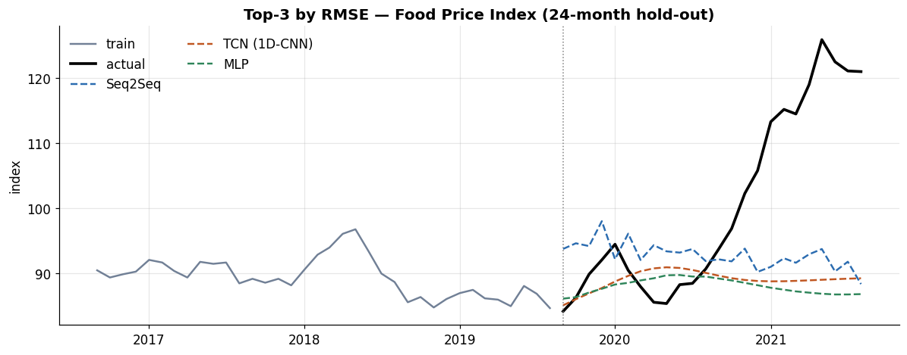

Series:Time Series Analysis in Python — from Statistical Modeling to Machine Learning
Part 8 ended on a hard limit: tree ensembles cannot extrapolate beyond their training range, so they under-shoot every new high. Neural networks remove that ceiling — they can extrapolate, and they model sequences natively. Part 9 builds the core deep-learning forecasters from scratch in PyTorch so the mechanics are transparent: MLPs, 1D CNNs / TCNs, and the recurrent family (RNN/LSTM/GRU), plus the seq2seq idea. (The high-level libraries and state-of-the-art architectures come in Part 10.)
What you will learn
Why sequence models, and how to window & batch a series for a neural net
An MLP baseline forecaster
1D CNN / TCN — causal, dilated convolutions over time
RNN → LSTM → GRU — recurrence and the vanishing-gradient problem
Seq2seq encoder–decoder and teacher forcing for multi-step
Training practices — scaling, time-aware validation, early stopping, LR scheduling
A benchmark where — for the first time in this series — models beat the baseline
Dataset
Back to a single series, the Food Price Index (356 months), with the same 24-month hold-out. New library: PyTorch.
0. Setup, data, scaling, and reproducibility
Neural nets are sensitive to input scale and to randomness, so we standardize using training statistics only (Part 6) and fix all seeds so results are reproducible on re-run.
1. Why sequence models — and how to feed them a series
A neural network needs a tensor of examples. We reuse Part 7’s sliding window, but now each example is a fixed-length look-back window of L past values mapped to the next value:
Sliding this window over the (standardized) training series yields a matrix of shape (n_samples, L). We split those windows by time into train/validation (never randomly — Part 6), wrap them in a DataLoader for mini-batching, and we’re ready to train any architecture.
def make_windows(series, L): X = np.stack([series[i:i+L] for i inrange(len(series) - L)]).astype("float32") Y = np.array([series[i+L] for i inrange(len(series) - L)], dtype="float32")return X, Yz_train = z[:-H] # standardized training portionXw, Yw = make_windows(z_train, L)# time-aware split: last 15% of windows for validationn_val =int(len(Xw) *0.15)Xtr, Ytr = Xw[:-n_val], Yw[:-n_val]Xval, Yval = Xw[-n_val:], Yw[-n_val:]train_loader = DataLoader( TensorDataset(torch.tensor(Xtr), torch.tensor(Ytr).unsqueeze(1)), batch_size=32, shuffle=True, generator=torch.Generator().manual_seed(0))Xval_t, Yval_t = torch.tensor(Xval), torch.tensor(Yval).unsqueeze(1)print(f"windows: {Xw.shape} | train {Xtr.shape[0]} | val {Xval.shape[0]}")
windows: (320, 12) | train 272 | val 48
Why standardize? Neural nets train by gradient descent; features on very different scales produce ill-conditioned gradients and slow or unstable learning. Standardizing to ~zero-mean/unit-variance (on train statistics) fixes this. Every forecast is de-standardized back to the original units before scoring.
We’ll reuse one training loop for every architecture — with the good practices of Section 6 built in: Adam, validation-based early stopping, and a learning-rate scheduler. And one recursive forecaster: predict one step, feed it back, repeat for H steps.
def train_model(model, epochs=400, lr=0.01, patience=40): model.to(DEVICE) opt = torch.optim.Adam(model.parameters(), lr=lr) sched = torch.optim.lr_scheduler.ReduceLROnPlateau(opt, factor=0.5, patience=15) lossf = nn.MSELoss() best_val, best_state, wait, hist = np.inf, None, 0, {"train": [], "val": []}for ep inrange(epochs): model.train(); tr_loss =0.0for xb, yb in train_loader: opt.zero_grad(); out = model(xb); loss = lossf(out, yb) loss.backward(); opt.step(); tr_loss += loss.item() *len(xb) tr_loss /=len(train_loader.dataset) model.eval()with torch.no_grad(): val_loss = lossf(model(Xval_t), Yval_t).item() sched.step(val_loss) hist["train"].append(tr_loss); hist["val"].append(val_loss)if val_loss < best_val -1e-5: best_val, best_state, wait = val_loss, {k: v.clone() for k, v in model.state_dict().items()}, 0else: wait +=1if wait >= patience: breakif best_state: model.load_state_dict(best_state)return model, hist@torch.no_grad()def recursive_forecast(model, history_z, L, H): model.eval(); buf =list(history_z[-L:]); out = []for _ inrange(H): x = torch.tensor(np.array(buf[-L:], dtype="float32")).unsqueeze(0) p =float(model(x).squeeze()); out.append(p); buf.append(p)return np.array(out) * SD + MU # de-standardize to original unitsresults = {} # name -> (forecast array, rmse)
2. An MLP baseline
The simplest neural forecaster flattens the look-back window and passes it through fully-connected layers. It ignores the order within the window (every lag is just an input), so it’s essentially the ML reduction with a neural net — a useful floor before we add sequence-aware structure.
3. 1D CNN and Temporal Convolutional Networks (TCN)
A 1D convolution slides a small kernel along the time axis, learning local patterns (a spike, a ramp) with shared weights — far fewer parameters than an MLP. Stacking convolutions with dilations that grow exponentially gives a Temporal Convolutional Network (TCN): a large receptive field, and — with causal padding (pad only on the left) — a guarantee that the output at time t depends only on inputs up to t, never the future.
Because the convolutions are causal, a TCN can be trained in parallel across all time steps (unlike an RNN) yet never peeks ahead — a big practical speed advantage, and one reason TCNs are popular for long sequences.
4. Recurrent networks — RNN, LSTM, GRU
A recurrent network processes the window one step at a time, carrying a hidden state that summarizes everything seen so far — a natural fit for sequences. The plain RNN suffers the vanishing-gradient problem: gradients shrink as they propagate back through many steps, so it forgets long-range structure. LSTM and GRU fix this with gating mechanisms that let information (and gradients) flow across many time steps, learning what to keep and what to forget.
We train an LSTM and a GRU; each reads the window as a length-L sequence of single values.
The recursive rollout above feeds each prediction back as input — simple, but errors compound. Sequence-to-sequence (seq2seq) models instead use an encoder to compress the look-back window into a state, then a decoder to generate the whole horizon. During training, the decoder can be fed the true previous value rather than its own prediction — teacher forcing — which stabilizes early training (at the cost of a small train/inference mismatch).
Here we use the simplest, robust variant: an LSTM encoder whose final state feeds a linear head that outputs all H steps at once (a direct multi-step decoder). This sidesteps recursive error-compounding entirely.
top = board["model"].head(3).tolist()fc_map = {"Naive": np.repeat(train_raw.iloc[-1], H), "Drift": np.asarray(drift),"ETS(M,Ad,N)": ets.values, "ARIMA(1,1,0)": arima.values,**{k: v[0] for k, v in results.items()}}fig, ax = plt.subplots(figsize=(11, 4.4))ax.plot(train_raw.index[-36:], train_raw.iloc[-36:], color=PALETTE[5], label="train")ax.plot(test_raw.index, test_raw, color="black", lw=2.4, label="actual")for name, c inzip(top, PALETTE): ax.plot(test_raw.index, fc_map[name], color=c, ls="--", label=name)ax.axvline(test_raw.index[0], color="grey", lw=1, ls=":")ax.set_title(f"Top-3 by RMSE — Food Price Index ({H}-month hold-out)")ax.set_ylabel("index"); ax.legend(frameon=False, ncol=2)plt.tight_layout(); plt.show()

A milestone. For the first time in the whole series, several models beat the drift baseline — the best neural forecasters extrapolate a mild upward drift, sitting above the last observed value instead of flat-lining, because unlike trees they aren’t capped at the training range. As the plot shows, that’s enough to edge the flat baselines on RMSE even though none captures the full surge to ~126 — the shock itself stays largely unforecastable, and the gain is real but modest. The direct multi-step model (Seq2Seq — one shot for the whole horizon) leads, followed by the TCN and the MLP; the recursive LSTM/GRU only match drift, because rolling their own predictions forward for 24 steps compounds error — the direct-vs-recursive trade-off from Part 6, now in neural form.
Two honest caveats keep this in perspective:
Small-data variance. With only ~300 windows, neural-net results swing a lot across seeds and initializations — the exact ordering here is noisy and does not cleanly follow textbook theory (with a short look-back a plain RNN can even match an LSTM). Treat the margins as indicative, not precise.
This is their easy case. A single trending series that keeps trending is where extrapolation pays. Deep learning’s real strength is scale — long sequences, many series, rich covariates — which is exactly where Part 10’s architectures operate.
8. Exercises
Look-back length. Retrain the LSTM with L = 6, 12, 24. Does a longer memory help or hurt on this series?
Vanilla RNN. Add the plain "RNN" to the benchmark. Does it underperform LSTM/GRU here? (With a short 12-step look-back the vanishing-gradient gap may barely bite — the textbook advantage of gating shows up on long sequences.)
Direct vs recursive. Compare the Seq2Seq (direct) forecast to the LSTM (recursive) — which handles the long horizon better, and why?
Regularize. Increase dropout and weight decay; does the neural net’s variance across three seeds shrink?
Probabilistic. Train with a quantile (pinball) loss at τ = 0.1/0.5/0.9 to produce prediction intervals; check coverage as in Part 3.
Neural nets bring two things trees lack: native sequence modelling and the ability to extrapolate beyond the training range — which is exactly why they finally beat the baselines here.
Window and batch the series into (look-back → next) tensors, split by time, and always scale on training statistics.
MLP ignores order; 1D CNN / TCN learn local patterns with causal, dilated convolutions (fast, parallel, leakage-free); LSTM/GRU carry a hidden state and use gating to beat the vanilla RNN’s vanishing gradientson long sequences (with a short look-back the gap can vanish).
Seq2seq encoder–decoders forecast the whole horizon at once, avoiding the recursive error-compounding that held the LSTM/GRU back here; teacher forcing stabilizes training.
Deep learning is data-hungry and higher-variance — powerful, but justified by scale (long sequences, many series, covariates), not by a single short series.
What’s next — Part 10: Modern Deep Forecasting Architectures
Part 10 moves to the state of the art via high-level libraries (darts, neuralforecast): N-BEATS, N-HiTS, DeepAR (probabilistic), the Temporal Fusion Transformer, and PatchTST — attention-based and purpose-built forecasting networks, with proper probabilistic outputs and global multi-series training.